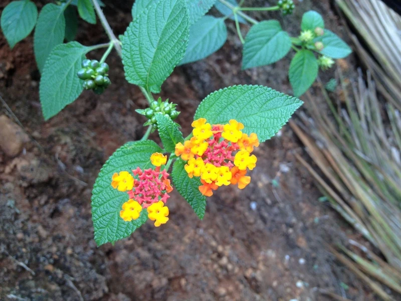

Android field pilot v0.1
Map Lantana
in the field.
Scan a thicket with your phone to highlight suspected Lantana, estimate visible cover, and save the patch for a return visit. Works offline.
Download Android APKAndroid 9 or later · Pilot build · Release details


Your first survey
Open the pilot
Install the APK and open Vanarekha. To try the model indoors, choose Connection → Test model on sample photo.
Scan a patch
Tap Scan a patch and move slowly along the edge for ten seconds. The phone saves the clearest view and its predicted cover.
Return after clearance
Open the saved visit and choose Rescan this patch. Use the previous photo to line up the next view.
Species predictions are experimental. Review the outline in mixed vegetation. Biomass estimates await calibration against local harvest measurements.